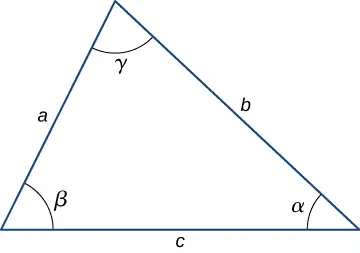
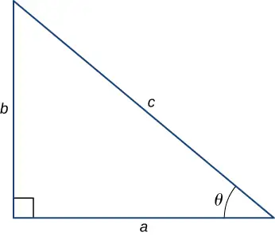

Appendix E: Mathematical Formulas¶
Mathematical Formulas¶
Quadratic formula
If \(ax^{2}+bx+c=0,\) then \(x=\frac{-b\pm\sqrt{b^{2}-4ac}}{2a}\)
Table E.1 Geometry
| Triangle of base \(b\) and height \(h\) | Area \(=\frac{1}{2}bh\) | |
|---|---|---|
| Circle of radius \(r\) | Circumference \(=2\pi r\) | Area \(=\pi r^{2}\) |
| Sphere of radius \(r\) | Surface area \(=4\pi r^{2}\) | Volume \(=\frac{4}{3}\pi r^{3}\) |
| Cylinder of radius \(r\) and height \(h\) | Area of curved surface \(=2\pi rh\) | Volume \(=\pi r^{2}h\) |
Trigonometry
Trigonometric Identities
- \(\sin\:\theta=1\text{/}\csc\:\theta\)
- \(\cos\:\theta=1\text{/}\sec\:\theta\)
- \(\tan\:\theta=1\text{/}\cot\:\theta\)
- \(\sin({90}^{0}-\theta)=\cos\:\theta\)
- \(\cos({90}^{0}-\theta)=\sin\:\theta\)
- \(\tan({90}^{0}-\theta)=\cot\:\theta\)
- \(\sin^{2}\:\theta+\cos^{2}\:\theta=1\)
- \(\sec^{2}\:\theta-\tan^{2}\:\theta=1\)
- \(\tan\:\theta=\sin\:\theta\text{/}\cos\:\theta\)
- \(\sin(\alpha\pm\beta)=\sin\:\alpha\:\cos\:\beta\pm\cos\:\alpha\:\sin\:\beta\)
- \(\cos(\alpha\pm\beta)=\cos\:\alpha\:\cos\:\beta\mp\sin\:\alpha\:\sin\:\beta\)
- \(\tan(\alpha\pm\beta)=\frac{\tan\:\alpha\pm\tan\:\beta}{1\mp\tan\:\alpha\:\tan\:\beta}\)
- \(\sin\:2\theta=2\sin\:\theta\:\cos\:\theta\)
- \(\cos\:2\theta=\cos^{2}\:\theta-\sin^{2}\:\theta=2\:\cos^{2}\:\theta-1=1-2\:\sin^{2}\:\theta\)
- \(\sin\:\alpha+\sin\:\beta=2\:\sin\frac{1}{2}(\alpha+\beta)\cos\frac{1}{2}(\alpha-\beta)\)
- \(\cos\:\alpha+\cos\:\beta=2\:\cos\frac{1}{2}(\alpha+\beta)\cos\frac{1}{2}(\alpha-\beta)\)
- \(\text{s}\:=\:r\theta\)
Triangles
- Law of sines: \(\frac{a}{\sin\:\alpha}=\frac{b}{\sin\:\beta}=\frac{c}{\sin\:\gamma}\)
- Law of cosines: \(c^{2}=a^{2}+b^{2}-2ab\:\cos\:\gamma\)

- Pythagorean theorem: \(a^{2}+b^{2}=c^{2}\)

Series expansions
- Binomial theorem: \({(a+b)}^{n}=a^{n}+na^{n-1}b+\frac{n(n-1)a^{n-2}b^{2}}{2\text{!}}+\frac{n(n-1)(n-2)a^{n-3}b^{3}}{3\text{!}}+\text{···}\)
- \({(1\pm x)}^{n}=1\pm\frac{nx}{1\text{!}}+\frac{n(n-1)x^{2}}{2\text{!}}\pm\text{···}(x^{2} \lt 1)\)
- \({(1\pm x)}^{-n}=1\mp\frac{nx}{1\text{!}}+\frac{n(n+1)x^{2}}{2\text{!}}\mp\text{···}(x^{2} \lt 1)\)
- \(\sin\:x=x-\frac{x^{3}}{3\text{!}}+\frac{x^{5}}{5\text{!}}-\text{···}\)
- \(\cos\:x=1-\frac{x^{2}}{2\text{!}}+\frac{x^{4}}{4\text{!}}-\text{···}\)
- \(\tan\:x=x+\frac{x^{3}}{3}+\frac{2x^{5}}{15}+\text{···}\)
- \(e^{x}=1+x+\frac{x^{2}}{2\text{!}}+\text{···}\)
- \(\ln(1+x)=x-\frac{1}{2}x^{2}+\frac{1}{3}x^{3}-\text{···}(|x| \lt 1)\)
Derivatives
- \(\frac{d}{dx}[af(x)]=a\frac{d}{dx}f(x)\)
- \(\frac{d}{dx}[f(x)+g(x)]=\frac{d}{dx}f(x)+\frac{d}{dx}g(x)\)
- \(\frac{d}{dx}[f(x)g(x)]=f(x)\frac{d}{dx}g(x)+g(x)\frac{d}{dx}f(x)\)
- \(\frac{d}{dx}f(u)=\left[ \frac{d}{du}f(u) \right]\frac{du}{dx}\)
- \(\frac{d}{dx}x^{m}=mx^{m-1}\)
- \(\frac{d}{dx}\:\sin\:x=\cos\:x\)
- \(\frac{d}{dx}\:\cos\:x=-\sin\:x\)
- \(\frac{d}{dx}\:\tan\:x=\sec^{2}\:x\)
- \(\frac{d}{dx}\:\cot\:x=-\csc^{2}\:x\)
- \(\frac{d}{dx}\:\sec\:x=\tan\:x\:\sec\:x\)
- \(\frac{d}{dx}\:\csc\:x=-\cot\:x\:\csc\:x\)
- \(\frac{d}{dx}e^{x}=e^{x}\)
- \(\frac{d}{dx}\:\ln\:x=\frac{1}{x}\)
- \(\frac{d}{dx}\:\sin^{-1}\:x=\frac{1}{\sqrt{1-x^{2}}}\)
- \(\frac{d}{dx}\:\cos^{-1}x=-\frac{1}{\sqrt{1-x^{2}}}\)
- \(\frac{d}{dx}\:\tan^{-1}x=\frac{1}{1+x^{2}}\)
Integrals
- \(\displaystyle \int af(x)dx=a\displaystyle \int f(x)dx\)
- \(\displaystyle \int[f(x)+g(x)]dx=\displaystyle \int f(x)dx+\displaystyle \int g(x)dx\)
- \(\begin{array}{cc} \displaystyle \int x^{m}dx & =\frac{x^{m+1}}{m+1}\:(m\neq-1) \\ & =\ln\:x(m=-1) \end{array}\)
- \(\displaystyle \int\sin\:x\:dx=-\cos\:x\)
- \(\displaystyle \int\cos\:x\:dx=\sin\:x\)
- \(\displaystyle \int\tan\:x\:dx=\ln|\sec\:x|\)
- \(\displaystyle \int\sin^{2}\:ax\:dx=\frac{x}{2}-\frac{\sin\:2ax}{4a}\)
- \(\displaystyle \int\cos^{2}\:ax\:dx=\frac{x}{2}+\frac{\sin\:2ax}{4a}\)
- \(\displaystyle \int\sin\:ax\:\cos\:ax\:dx=-\frac{\cos 2ax}{4a}\)
- \(\displaystyle \int e^{ax}\:dx=\frac{1}{a}e^{ax}\)
- \(\displaystyle \int xe^{ax}dx=\frac{e^{ax}}{a^{2}}(ax-1)\)
- \(\displaystyle \int\ln\:ax\:dx=x\:\ln\:ax-x\)
- \(\displaystyle \int\frac{dx}{a^{2}+x^{2}}=\frac{1}{a}\:\tan^{-1}\frac{x}{a}\)
- \(\displaystyle \int\frac{dx}{a^{2}-x^{2}}=\frac{1}{2a}\:\ln\left| \frac{x+a}{x-a} \right|\)
- \(\displaystyle \int\frac{dx}{\sqrt{a^{2}+x^{2}}}=\sinh^{-1}\frac{x}{a}\)
- \(\displaystyle \int\frac{dx}{\sqrt{a^{2}-x^{2}}}=\sin^{-1}\frac{x}{a}\)
- \(\displaystyle \int\sqrt{a^{2}+x^{2}}\:dx=\frac{x}{2}\sqrt{a^{2}+x^{2}}+\frac{a^{2}}{2}\:\sinh^{-1}\frac{x}{a}\)
- \(\displaystyle \int\sqrt{a^{2}-x^{2}}\:dx=\frac{x}{2}\sqrt{a^{2}-x^{2}}+\frac{a^{2}}{2}\:\sin^{-1}\frac{x}{a}\)
- \(\displaystyle \int\frac{1}{(x^{2}+a^{2}{)}^{3/2}}dx=\frac{x}{a^{2}\sqrt{x^{2}+a^{2}}}\)
- \(\displaystyle \int\frac{x}{(x^{2}+a^{2}{)}^{3/2}}dx=-\frac{1}{\sqrt{x^{2}+a^{2}}}\)
Adapted from University Physics Volume 1 by OpenStax, licensed under CC BY 4.0. Access the original for free at openstax.org. Changes: converted to the web reading format of The Open Book Project.